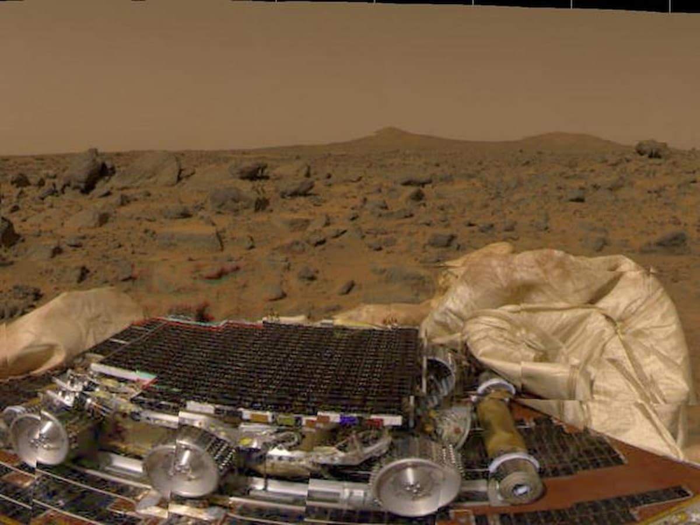
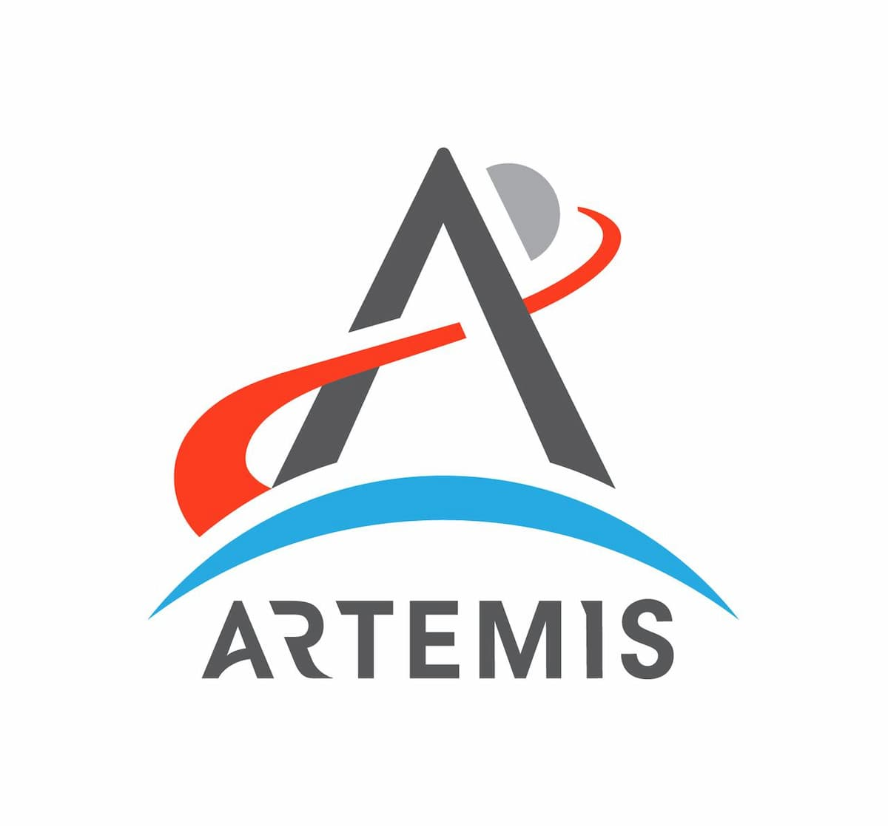
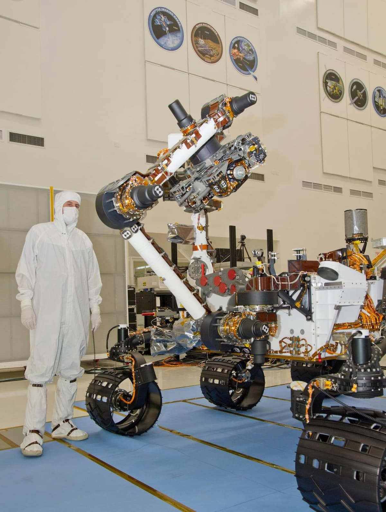

Sojourner: Pathfinder
The mission tested a unique airbag landing system.


Robotic Explorers on the Red Planet
| Rover | Launch | Landing | Site |
|---|---|---|---|
| Sojourner | Dec. 4, 1996 | July 4, 1997 | Ares Vallis |
| Curiosity | Nov. 26, 2011 | Aug. 6, 2012 | Gale Crater |
The mission tested a unique airbag landing system.

Curiosity used a rocket-powered crane to land safely.
